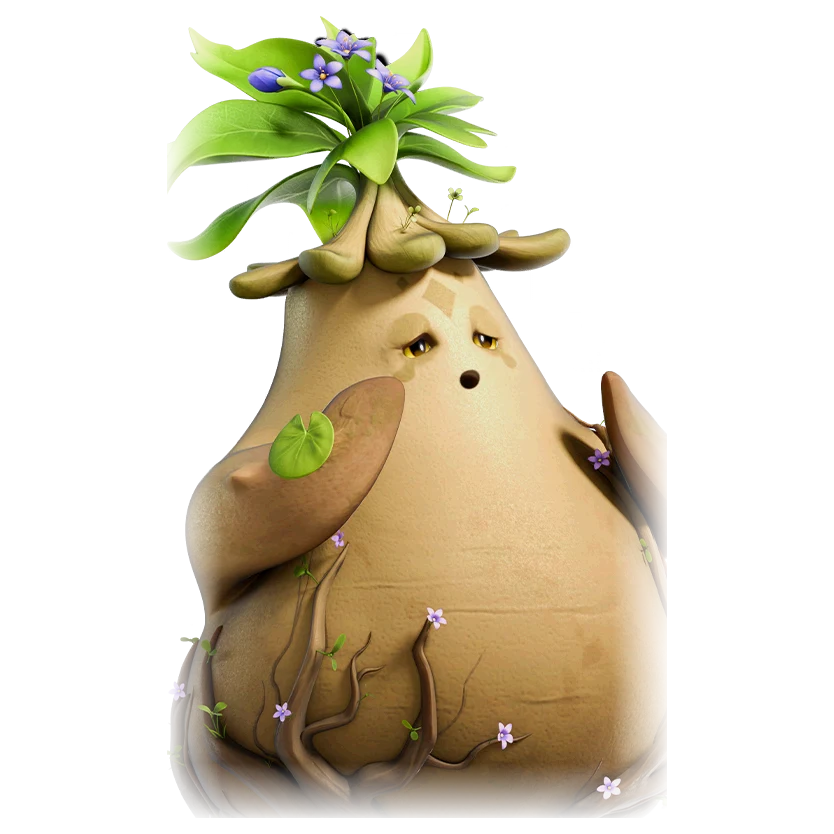

รายชื่อ Aniimo › #022

ผักจอมซุก (Tuckin)
#022ธาตุพืชNovaBreakTier B
ต้องดูดสารอาหารจากดินผ่านรากเพื่อรักษาพลังชีวิต และเกลียดการออกจากพื้นดิน
ดูรายละเอียดเต็ม ร่างพิเศษ และร่างเปล่งประกายค่าสถานะพื้นฐาน
| HP | 106 |
|---|---|
| ATK | 80 |
| P.DEF | 83 |
| M.DEF | 110 |
| REGEN | 71 |
| BREAK | 100 |
สกิล
| โจมตีปกติ | ATK พืช (BREAK) ใช้พลังพืชโจมตีเป้าหมายระยะประชิด |
| สกิล 1 | Off-Key Shock Wave พืช เทเลพอร์ต Hummin ทุกตัวไปข้างเป้าหมายแล้วพุ่งชนโจมตี |
| สกิล 2 | Haunting Choir พืช ให้ Hummin ทุกตัววาร์ปไปข้างเป้าหมายแล้วปล่อยคลื่นเสียง ทำดาเมจเป็นพื้นที่และติด [Stun] 1 วินาที |
| สกิล 3 | Draw Nourishment ดิน หยั่งรากลงดินอย่างมั่นคง ให้ตัวเองและ Hummin ได้ประสิทธิภาพ BREAK 20% ฟื้น HP ให้ Hummin ทุกตัว 50% ทันที และฮีลตัวเองกับ Hummin รอบตัว 2% ของ HP ทุกวินาที |
| อัลติเมต | Breaking Roar พืช เรียก Hummin กลับมาจนครบจำนวนสูงสุด แล้วคำรามพร้อมกันปล่อยคลื่นกระแทกขนาดใหญ่ใส่เป้าหมาย |
สายวิวัฒนาการ
- ผักร่าเริง → ผักจอมซุก (Aniimo เลเวล 18, มุดดินค้างไว้ 20 วินาที ที่ทางเข้า Sanctum: Twisted Roots, ชนะ Omega Tuckin)
Held Item ที่แนะนำ
- Gargantuan Horn Aniimo ที่สวมใส่ได้ BREAK เพิ่ม 0.7 ต่อเลเวล
งานใน Homeland
งานธาตุพืช Lv.3, ขนของ Lv.3